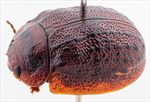
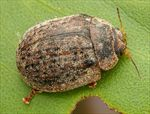
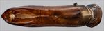
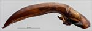
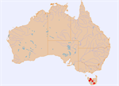

Click on images to enlarge
{kind=link}

Male, Zeehan, Tasmania
{kind=link}

Female, Little Pine Lagoon, Tasmania
{kind=link}

Aedeagus, dorsal view (Ridgley, Tasmania)
{kind=link}

Aedeagus, lateral view (Ridgley, Tasmania)
{kind=link}

Distribution
Name
Trachymela sp. Ta77
Reference specimen
1998-0023, Zeehan, Tasmania.
Adult Description
Length: ♂ 8.4–9.0 mm (n=3), ♀ 9.0–9.9 mm (n=5).
Colouration:
- Head: frons mid- to dark brown, clypeus usually slightly paler brown, fronto-clypeal suture narrowly black, labrum pale brown, rear of head (behind level of eyes) black, visible only if head slightly extended; mandibles brown with black tips; antennomeres 1–2 light brown, 3–5 grading towards black, often with distal extreme darker, 6–11 very dark brown or black.
- Pronotum: brown, concolorous with head, a large irregular shaped black macula present on each side that extends over much of the foveal area away from the anterior and posterior margins and extends towards centre and slightly posteriorly onto disc as a broad black band, sometimes the discal sections of these maculae are more extensive and merge across centre line to form one large black macula.
- Scutellum: dark brown, concolorous with or darker than adjacent area of pronotum, broadly edged in darker brown or black.
- Elytra: brown, concolorous with pronotum, with black wart-like elevations and longitudinally extended ridges arranged over the whole surface as 8–9 more or less interrupted rows, elytral suture sometimes darker brown or, rarely, black, punctures concolorous with or fractionally darker than interstices, humeral callus black.
- Venter & Legs: head reddish-brown laterally, gula black; thoracic ventrites mostly black, sometimes with small mid-brown patches, abdomen mostly black, often with brown patches, particularly at centre of abdominal ventrite 1 and at posterior of abdominal ventrite 4, legs light- to mid-brown, inside surface of elytral epipleura brown.
- Cuticular Wax: light brown throughout, scattered slightly unevenly and moderately densely over dorsal surface.
Morphology:
- Shape: evenly and quite lightly curved from scutellum to some distance past summit (H/BL=0.37-0.42), where curvature increases markedly, greatest height viewed laterally is in front of middle of elytral margin.
- Head: punctures moderately sized (pd ≈ 1.5–2.5 × ef), sometimes with a few that are considerably larger, evenly and densely distributed. Antennae moderately long (AL: ♂ 43–45% BL, ♀ 38.3% BL), filiform.
- Pronotum: almost evenly curved transversely over discal region, foveal depression shallow to relatively deep, lacking a foveal peak, marginal area noticeably explanate, discal area slightly uneven to quite rough-textured but never concealing punctures, on disc punctures deeply impressed, a mix of sizes present similar to head, though relatively evenly and quite densely distributed, occasional clusters of punctures give an appearance of unevenness, many coarser punctures present on marginal area. Thick front margins join thinner lateral margins in a tight rounded right-angle, sometimes almost mucronate, with lateral margin initially almost straight for more than half their length before curving smoothly and gradually towards thicker rear margin.
- Scutellum: smooth and unpunctured.
- Elytra: surface evenly curved transversely, antero-median depression relatively well-defined, punctures large and distinct and relatively evenly distributed between the rows of verrucae, punctures in marginal area similar in size to those on disc, much finer punctures are scattered over the interstices, verrucae are mostly little elevated above the interstices and form prominent interrupted longitudinal series that are emphasized by the black interstices between them, elytral suture carinate in posterior 25%, surface discontinuous under humeral callus. Vertical extension of epipleura considerable (HCE/PW = 0.37–0.39).
- Venter: prosternal process almost parallel-sided, closed anteriorly, short setae sparsely distributed over prosternal process and mesoventrite, a single seta on anterior and median trochanter; front edge of metaventrite beveled, truncate; inner edge of posterior of epipleura lacking setae.
Male Genitalia (Aedeagus):
- Dimensions: long (LPE = 43–44% BL).
- Dorsal view: shaft narrowing anteriorly from just in front of basal sulcus to a little behind ostium, then widening gradually to a point a little in front of rear of ostium before narrowing again very gradually and almost smoothly to apex, the rate of narrowing increasing noticeably just before apex, dorsal surface lightly sclerotized with dorso-median channel becoming a broad depression for a short distance a little posteriorly to ostium, short but well defined and slightly oblique dorsolateral channels form an ostium that is in the shape of a long oval; spatula moderate in size, tip relatively small and triangular, ostial processes narrow and terminating just before spatula.
- Lateral view: shaft curved near basal sulcus, then ventral surface relatively straight until just in front of rear of ostium, where there is a downward curve towards apex, dorsal surface parallel to ventral from basal sulcus to rear of ostium, then converging with ventral towards apex, tip strongly deflexed.
Immature Stages
- Eggs: Unknown.
- Larvae: See de Little (1979, PhD thesis, p. 142).
Similar species
None.
Notes
- Taxonomy: Ta77 is identified as T. comma (Blackburn), confirmed by de Little (2023, pers. comm.). One of the specimens in the Peter Kelly collection [ANIC-PGK/3986c] which is clearly Ta77 is labelled with a “P. caliginosa Chap” identification label. However, Ta77 is very unlikely to be Trachymela caliginosa. The holotype of that species (Royal Belgian Institute of Natural Sciences, Brussels) has verrucae that, although in longitudinal series as in Ta77, are much more elevated and discrete than those of Ta77. In any case, the type locality of T. caliginosa is Port Denison.
- Host Associations: De Little (1979, PhD thesis) recorded Ta77 (his Ta4) on the monocalypt species Eucalyptus delegatensis (1 record), E. nitida (3) and E. coccifera (5), as well as two Symphyomyrtus: Maidenaria species, E. vernicosa (2) and E. dalrympleana (1).
Copyright © 2026. All rights reserved.